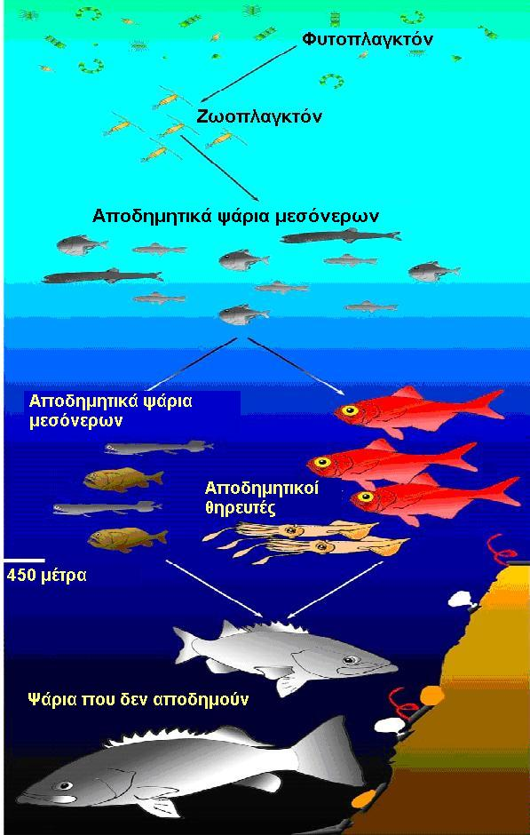

Τα υδάτινα οικοσυστήματα καλύπτουν πάνω από τα δύο τρίτα της επιφάνειας της γης. Αποτελούνται από τις βιοκοινότητες των φυτών και των ζώων που εξαρτώνται από το νερό. Τα κύρια είδη των υδάτινων οικοσυστημάτων είναι του θαλασσινού και του γλυκού νερού. Το οικοσύστημα του γλυκού νερού έχει πολύ χαμηλότερη περιεκτικότητα σε αλάτι από το θαλάσσιο οικοσύστημα. Τα οικοσυστήματα του γλυκού νερού καλύπτουν λιγότερο από το ένα τοις εκατόν της επιφάνειας της γης, αλλά εξακολουθούν να φιλοξενούν μια μεγάλη ποικιλία μορφών ζωής. Πράγματι, τα οικοσυστήματα του γλυκού νερού περιλαμβάνουν περίπου το 40% όλων των ειδών των ψαριών.
Τα τσιρόνια και οι λούτσοι είναι τυπικοί εκπρόσωποι της σχέσης θηρευτή-θηράματος σε οικοσυστήματα γλυκού νερού. Το κοινό τσιρόνι (Rutilus rutilus) είναι ένα ψάρι του γλυκού νερού και θεωρείται ντόπιο στα περισσότερα μέρη της Ευρώπης. Το μήκος του τσιρονιού δεν υπερβαίνει τα 35 cm. Τρέφεται με φυτικό υλικό, (βενθικούς οργανισμούς) ασπόνδυλα και πλαγκτόν. Ο λούτσος (Esox lucius) που συναντάται βόρεια είναι ένα είδος σαρκοφάγου ψαριού, το οποίο είναι χαρακτηριστικό των γλυκών υδάτων του βορείου ημισφαιρίου. Οι λούτσοι μπορεί να μεγαλώσουν και να ξεπεράσουν το ένα μέτρο μήκος και τα 20 κιλά μάζα. Τρέφονται με μικρότερα ψάρια.
Χαρακτηριστικός αντιπρόσωπος των αυτότροφων οργανισμών στα οικοσυστήματα του γλυκού νερού είναι η άλγη (φυτοπλαγκτόν). Όπως συμβαίνει και με τα χερσαία φυτά, το φυτοπλαγκτόν χρησιμοποιεί το φως του ήλιου για να παράγει οργανικές ενώσεις. Στις συνδέσεις των τροφικών πλεγμάτων, οι τροφικές πυραμίδες βασίζονται στο φυτοπλαγκτόν. Τα περισσότερα ασπόνδυλα είναι φυτοφάγα ή θηράματα. Τα ψάρια είναι θηρευτές. Τα πτηνά και τα αμφίβια επίσης συμπεριλαμβάνονται στους πιο μεγάλους καταναλωτές σε πολλές περιπτώσεις. Πολλά ψάρια τρέφονται με ασπόνδυλα. Μερικά πουλιά τρέφονται με ασπόνδυλα τα οποία δεν κατάφεραν να γλιτώσουν από τα ψάρια. Άλλα πτηνά μπορούν να τραφούν με υδρόβια έντομα τα οποία βρίσκονται στην επιφάνεια των υδάτινων μαζών.
Φυτοπλαγκτόν και ζωοπλαγκτόν
Το φυτοπλαγκτόν, κυρίως η άλγη, αποτελούν τη βάση της τροφικής αλυσίδας σε μια λίμνη. Μια διαφορετική κοινότητα μικροσκοπικών οργανισμών, το ζωοπλαγκτόν, καταλαμβάνει το ανώτερο στρώμα της λίμνης. Το ζωοπλαγκτόν τρέφεται με άλγη. Αν κάποιος μπορεί να δει καθαρά μέσα από το νερό της λίμνης, τότε το ζωοπλαγκτόν καταναλώνει τη μεγαλύτερη ποσότητα άλγης. Αν το νερό της λίμνης δεν είναι διαυγές, τότε τα φύκια βρίσκονται σε αφθονία.

Τροφικά επίπεδα σε ένα υδάτινο οικοσύστημα. Πηγή: http://creationwiki.org/File:Food_web1.jpg